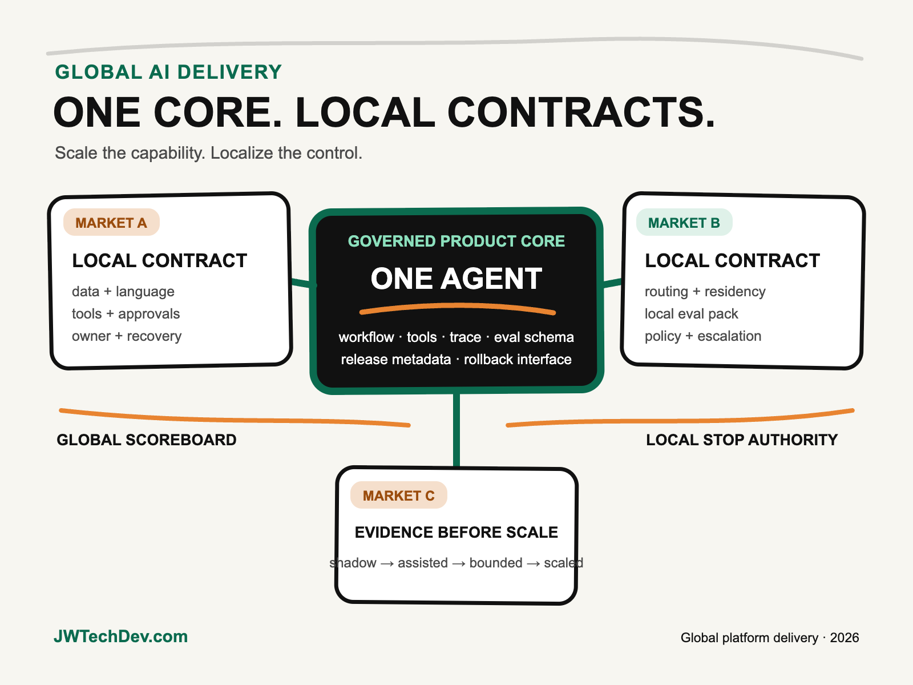

How to scale one AI agent across markets without losing control.
Do not deploy one global agent configuration and call it scale. Keep a shared product core, then require every market to declare its own data boundary, authority, language, evaluation, operating owner, and recovery path before traffic is promoted.

Quick answer
Scale the capability globally, not every implementation detail. Reuse the agent's workflow, tool interfaces, release metadata, evaluation schema, observability fields, and core product behavior. Localize the controls that depend on market context: data residency, language, laws and norms, approved models, tool permissions, write actions, human approval, escalation, and fallback.
I call this One Core, Local Contracts. The global platform team owns the reusable core and the contract schema. Each market signs its contract with evidence. A deployment cannot inherit production status merely because another market passed.
The false choice between global consistency and local control
Global teams often drift toward one of two failures. In the first, every market builds its own agent. Local fit improves, but architecture, security, cost, and quality fragment. In the second, headquarters ships one configuration everywhere. Reuse improves, but important differences become late exceptions: where prompts can be processed, which data can leave a country, how users express intent, which tools may write to systems, and who is accountable when the agent is wrong.
The better design separates what should be stable from what must remain contextual. NIST's AI Risk Management Framework begins with mapping intended purpose, users, laws, norms, expectations, and deployment settings. That matters because the same model and workflow can carry different risks when the audience, language, authority, or operating environment changes.
Infrastructure decisions carry the same context. Amazon Bedrock supports in-Region, geographic cross-Region, and global cross-Region inference. AWS documents different data-residency and routing implications for each option. Geographic profiles keep processing within a defined geography, while global profiles may route to supported commercial Regions worldwide. That is not a configuration detail to bury in a deployment script. It is a market-level decision tied to policy, cost, capacity, and evidence.
The One Core, Local Contracts model
1. Governed product core. Reuse the outcome definition, orchestration pattern, tool contracts, prompt and model versioning, evaluation schema, trace fields, cost telemetry, deployment metadata, and rollback interface. The core should say what the product does and how evidence is captured. It should not assume every market can use the same data path or authority.
2. Market deployment contract. Create one version-controlled record per market. It should name the business owner, supported users and languages, approved data classes, processing geography, model and inference profile, tool allowlist, permitted write actions, approval gates, retention rules, support hours, escalation route, and accepted residual risk. If a field is unknown, the market is not production-ready.
3. Regional runtime envelope. Enforce the contract through architecture: identity boundaries, regional data stores, network routing, encryption keys, inference profiles, policy checks, secrets, quotas, and audit logs. AWS Well-Architected guidance for generative AI recommends mapping critical network paths, designing redundant topology, configuring failover, and regularly validating it. Global delivery requires those controls to be testable, not described in a slide.
4. Local evaluation pack. Keep a common evaluation taxonomy, but test with local tasks, language, terminology, cultural assumptions, edge cases, policy boundaries, and tool outcomes. Aggregate comparable metrics globally while preserving market-specific failure analysis. A translation benchmark alone does not prove that the agent understands a local workflow.
5. Named operating owner. Every market needs someone who can approve launch, interpret local evidence, stop the system, and coordinate an incident. The global platform team cannot be the substitute for local business accountability. Ownership is part of the architecture because it determines who can change policy and how quickly the system can recover.
Promote markets through evidence rings
A market launch should advance through four rings. Shadow runs the agent against real or representative work without acting. Assisted lets a human inspect every recommendation. Bounded production permits narrowly defined actions with approvals, limits, and rollback. Scaled production expands volume or authority only after local quality, safety, cost, and operational targets hold.
Use one release board to compare markets, but do not reduce the decision to a single global score. The board should see common measures such as task success, tool errors, latency, unit cost, approval rate, overrides, incidents, and rollback readiness, alongside local measures. A market can be healthy on global averages and still fail a critical local policy or language case.
Also treat routing as observable. AWS notes that CloudTrail records Bedrock cross-Region inference activity in the source Region and exposes the destination inference Region in event data. Capture that evidence with the agent trace so operators can answer where processing occurred, which policy allowed it, and which market contract governed the request.
What to do next Monday
- Choose one agent and two markets. Use a real comparison instead of designing an abstract global framework.
- Split core from contract. Mark each configuration item as globally reusable, market-specific, or prohibited from inheritance.
- Publish the contract schema. Include ownership, users, language, data, routing, tools, authority, evaluation, operations, and recovery.
- Verify the inference path. Query supported profiles from each source Region and confirm destination Regions rather than trusting a name or assumption.
- Build ten local evaluation cases. Cover language, terminology, policy, tool use, and failure handling with local reviewers.
- Run a shadow comparison. Measure quality, routing, latency, cost, overrides, and unexpected tool behavior in both markets.
- Hold a promotion decision. Record the evidence, unresolved risks, owner, approved ring, and rollback trigger for each market.
The executive question is not, “Can this agent run in another country?” It is, “Can we prove which parts are shared, which controls are local, and who can stop it when reality differs from the global design?” That is how a platform scales without turning every market into either a fork or an exception.
I will be at AFROTECH in Houston November 2-6. If you are building an enterprise AI platform, global delivery organization, or technical go-to-market motion, I would be glad to compare notes.
Sources checked
Design global AI as a governed product
Explore more practical frameworks for enterprise AI, cloud architecture, governance, and technical leadership.
Get the free starter kit